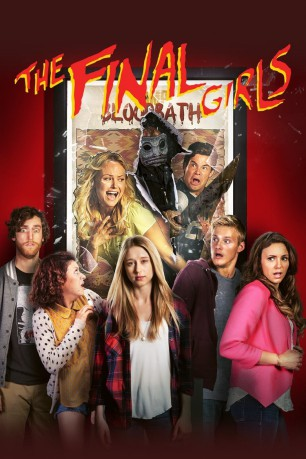

#9315 The Final Girls
 
 IMDB-Wertung: 6.6 / 10
IMDB-Wertung: 6.6 / 10  Metascore: 0
Metascore: 0 
Max Cartwright betrauert noch immer den Tod ihrer Mutter Amanda, einer Scream-Queen aus den 1980ern. Gemeinsam mit ihren Freunden Gertie, Vicki, Duncan und Chris schaut sie im Kino einen berühmten Slasher-Horrorfilm der Verstorbenen: „Camp Bloodbath: Cruel Sommer 2“. So kann sie auf eine ungewöhnliche Art ihrer Mutter gedenken, auch wenn diese zu den Opfern des psychopathischen Killers zählt. Plötzlich bricht im Saal ein Feuer aus und die Zuschauer geraten in Panik. Max und ihre Freunde entdecken einen Ausweg aus der Gluthölle, doch finden sich die jungen Leute nicht außerhalb des Kinosaals wieder, sondern inmitten der Filmhandlung. Es dauert nicht lange, bis sie begreifen, dass hier nicht mit Kunstblut hantiert wird, denn die Morde sind echt. Mutter, Tochter und Clique bekommen es mit einem Killer zu tun, der ein Sommercamp ordentlich aufmischt - doch sie geben nicht so schnell auf und holen zur Gegenattacke aus.
Jahr: 2015
Dauer: 91 Minuten
FSK: 16
Land: USA Studio: Vertical EntertainmentTonspuren: DTS - ,
Untertitel: Deutsch,
Auflösung: 1080p (1920x800) Größe: 4802 MB
Genre: Horror, Komödie
Regisseur: Todd Strauss-Schulson
Drehbuch: M.A. Fortin
Soundtrack: Gregory James Jenkins, Eddy Zak
Darsteller:
 Taissa Farmiga als Max Cartwright
Taissa Farmiga als Max Cartwright Malin Akerman als Nancy / Amanda Cartwright
Malin Akerman als Nancy / Amanda Cartwright Alexander Ludwig als Chris Briggs
Alexander Ludwig als Chris Briggs Nina Dobrev als Vicki Summers
Nina Dobrev als Vicki Summers Alia Shawkat als Gertie Michaels
Alia Shawkat als Gertie Michaels Thomas Middleditch als Duncan
Thomas Middleditch als Duncan Adam Devine als Kurt
Adam Devine als Kurt- Angela Trimbur als Tina
- Chloe Bridges als Paula
- Tory N. Thompson als Blake
 Lauren Gros als Mimi
Lauren Gros als Mimi- Daniel Norris als Billy Murphy
- Eric Michael Carney als Young Billy Murphy
- Cory Hart als Doctor
- Dave Davis als 50's Counselor
 Bryce Romero als Mean Kid
Bryce Romero als Mean Kid- Steve French als Bloodbath Trailer VO
- Ashen Bonaventure als Crying Girl In Fire (uncredited)
- Sergio Figueroa als Theater Patron (uncredited)
- Ronnie Hooks als Actress at audition (uncredited)
- James Kemp als Camp Counselor #2 (uncredited)
- Reginald Robinson als Hunky Hiker
- Jackie Tuttle als Nurse
- Michelle DeVito als Driver (uncredited)
- Blake Dozzer als Theater Fan (uncredited)
- Patrick Kearns als Theater Patron (uncredited)
- Joseph Menard als Theater Fan (uncredited)
- Laura Jeanne Meyer als Theater Patron (uncredited)
- Jesse Yarborough als Theater Patron (uncredited)
Datei: X:\2015(A-F)\Final Girls, The (2015, FSK16, 1920x800).mkv seit 27.07.2018
Festplatte: HD 2015(A-Z)
 Es gibt insgesamt 143 Filme in der Gruppe '2015(A-F)'
Es gibt insgesamt 143 Filme in der Gruppe '2015(A-F)'